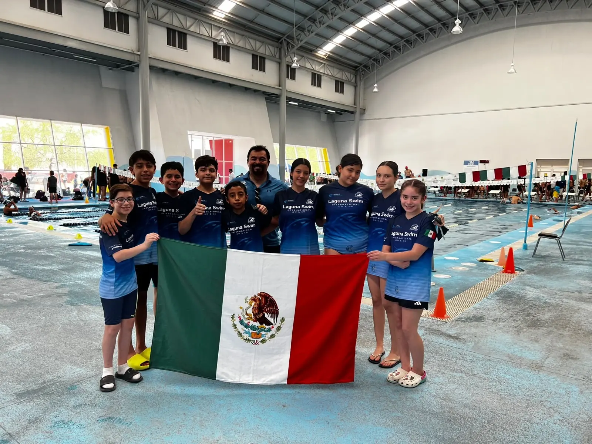
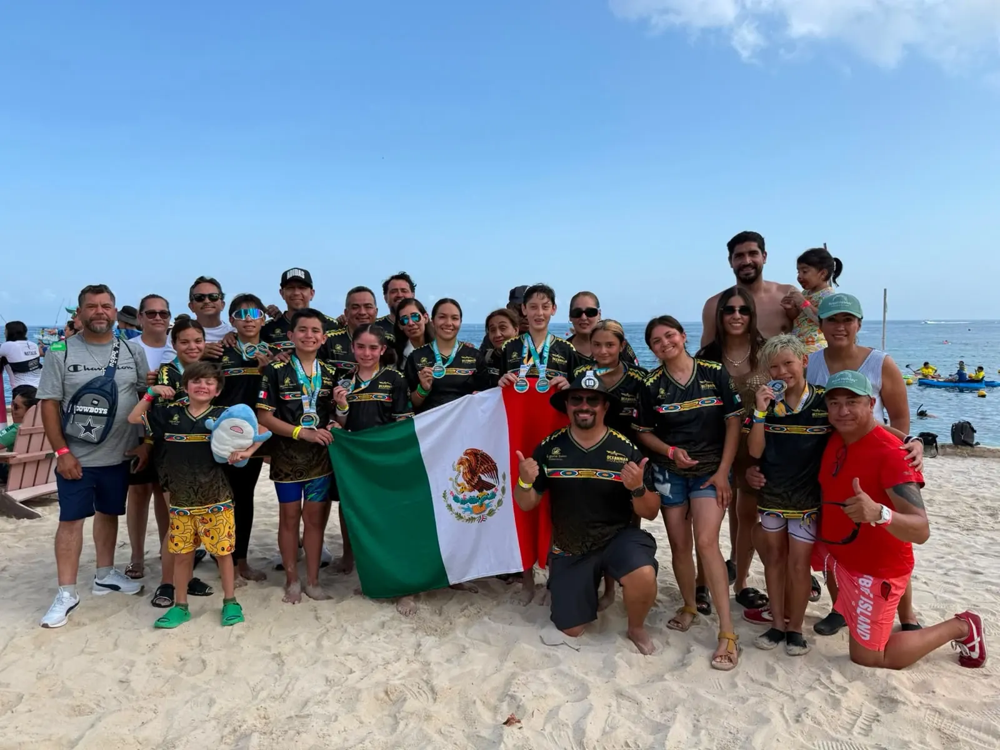
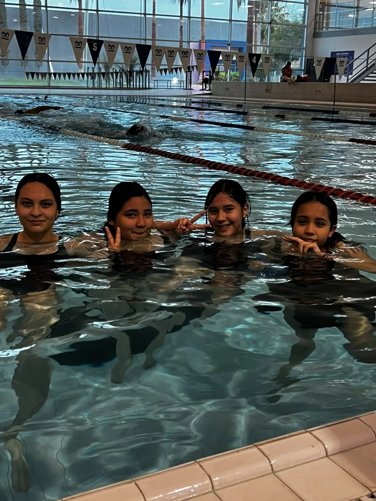
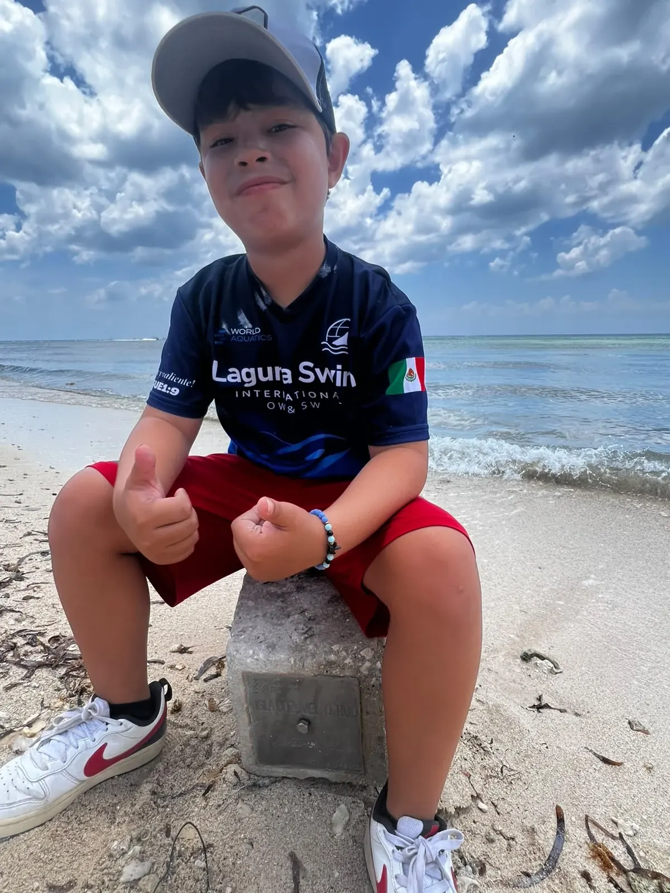
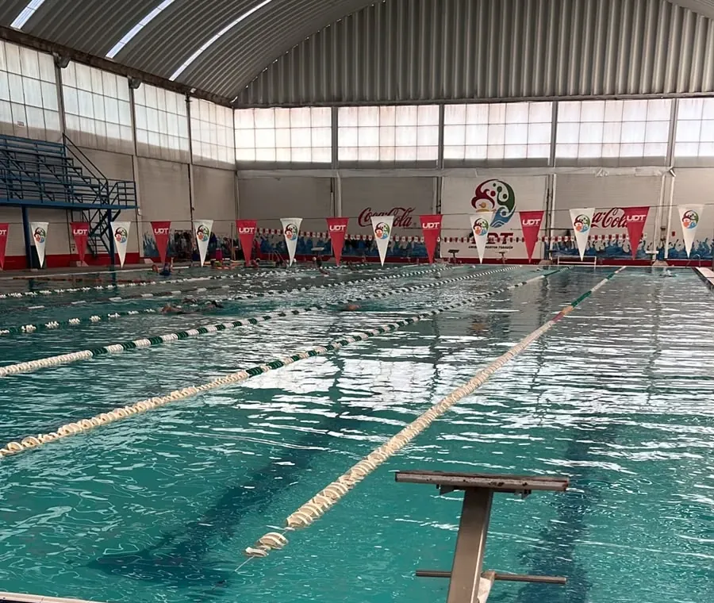
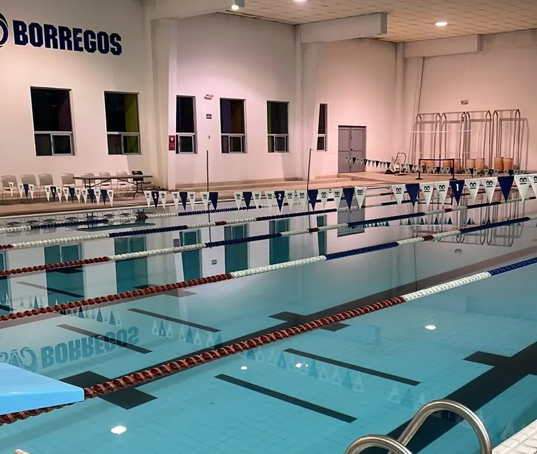

Primeros chapoteos
Preescolar
Seguridad en el agua, flotación, respiración y confianza. El objetivo no es velocidad, es que el niño entre feliz y salga queriendo volver.
Informes de este grupoClases de natación para niños y jóvenes, de preescolar a secundaria. Alberca de 25 metros, grupos por edad y un coach con 30 años en el borde de la alberca.
Pedir informes por WhatsApp
Cada grupo trabaja distinto. Un niño de preescolar necesita perder el miedo y flotar; uno de secundaria necesita técnica fina y ritmo de competencia. Por eso no mezclamos.
Seguridad en el agua, flotación, respiración y confianza. El objetivo no es velocidad, es que el niño entre feliz y salga queriendo volver.
Informes de este grupoCrol y dorso completos, coordinación de brazos y piernas, y las primeras vueltas de 25 metros sin parar.
Informes de este grupoSe agregan pecho y mariposa, salidas de banco y vueltas. Aquí muchos deciden que quieren competir.
Informes de este grupoVolumen de entrenamiento, series con tiempo, drills técnicos y reglamento de competencia. Primeros seriales locales.
Informes de este grupoPlanificación por temporada, control de marcas, competencias estatales y nacionales, y aguas abiertas para quien quiera el circuito Oceanman.
Informes de este grupoDe este equipo salió Miguel De Lara, récord nacional mexicano de 100 y 200 metros pecho y olímpico en París 2024, y Luisa Silva, con 5 oros panamericanos Masters.

Laguna Swim International enseña a nadar desde el primer chapoteo hasta la competencia internacional.




Desde preescolar. Los grupos van por etapa escolar —preescolar, primaria 1-2, 3-4, 5-6 y secundaria— para que cada niño avance con compañeros de su edad y nivel.
No. Hay grupos de iniciación para quien nunca ha entrado a una alberca. Antes de inscribirse hacemos una evaluación corta para ubicarlo en el nivel correcto.
Traje de baño, goggles, gorra y toalla. Si todavía no tiene equipo, manejamos gorras, goggles y trajes de competencia del equipo.
Depende del grupo. Los grupos de iniciación entrenan dos o tres días; el equipo competitivo puede llegar a cinco o seis sesiones semanales.
Por WhatsApp con el coach. Ahí revisamos horarios disponibles, la sede que te queda mejor y el costo del mes.
Inscribe a tu hijo por WhatsApp. El coach revisa contigo horarios, sede y costo del mes.
inscribir